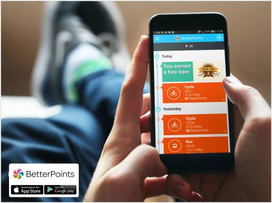
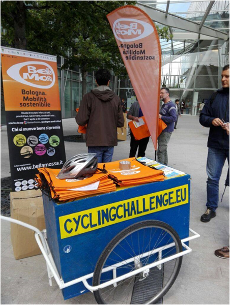

Tools Used
- Building Motivation Over Time
- Feedback
- Financial Incentives and Disincentives
- Norm Appeals
- Overcoming Specific Barriers
- Prompts
- Word of mouth
Initiated By
- City of Bologna
Partners
- Local businesses
Results
- 895,000 trips by alternative transportation methods over 6 months
- Reduction of 3.7 million kilometres and up to 728 tonnes of CO2 emissions over 6 months
Case Study PDF
Three Minute Video
Further Details
Landmark Case Study
Bologna’s Bella Mossa
Bologna’s Bella Mossa program awarded participants points for walking, cycling or using public transport. Points could be redeemed for discounts or payment towards merchandise and services from 85 retailers, including supermarkets, sports retailers, bike stores, opticians, bookshops, cinemas, restaurants and bars. In 2018, 10,000 people reported taking 995,000 trips by alternative transportation methods, totalling 3.7 million kilometres and saving 711 tonnes of CO2. The program won CIVITAS’s “Bold Measure" award in 2017 and was designated a Landmark case study in 2019.
Background
The Bella Mossa program (which means, “good job” in English) was launched in 2017 in the metropolitan area of Bologna, Italy, a 3,700 square km area with a population of around 1 million.
Bologna had tried to reduce CO2 emissions before, by banning the use of polluting vehicles during the day. That approach had been unpopular, so the local transport authority decided to try incentives.
Map courtesy of http://mapswire.com
Getting Informed
The team at SRM, the local transport authority, had prior experience with large scale citizen engagement programmes and had previously secured EU funds to test new ideas around mode shift and behaviour change interventions.
In 2016 the European Union’s Horizon 2020 initiative created a funding stream called EMPOWER, which was designed to test rewarding change. The project researched how positive incentives can encourage citizens to reconsider their travel choices and reduce the extent to which they travel using conventionally fuelled vehicles.
A number of cities were successful in applying for this fund, and Bologna was one of them. Each city could choose the technology they wanted to deploy for the project, and after evaluation, SRM chose the BetterPoints system.
SRM had run a Europe-wide project for 7 years, called the European Cycling Challenge, so they had a good working knowledge of tracking apps, and gamification tools like leaderboards. They had also engaged an academic to look into other gamification techniques.
Delivering the Program
The Bella Mossa program was launched as a six month field experiment in April, 2017. By the end 15,000 people had participated. The second iteration ran in 2018, with local funding and enhancements that increased engagement. Participants downloaded a free Smartphone app from BetterPoints that used GPS to automatically record their trips based on location, motion and time.
The program awarded points for walking, cycling or using public transport. To encourage the use of alternative modes of travel even for short trips, the number of points given was based on the number of trips, rather than the distance traveled (up to a maximum of four trips a day). Additional points were awarded for going to special events or meeting specified goals, such as walking for 150 or more minutes a week or a minimum number of days per week, or meeting recommended weekly physical activity levels by cycling or walking. (Building Motivation and Engagement Over Time; Feedback; Incentives; Vivid, Personalized, Credible, Empowering Communication)
Points could be redeemed for discounts or payment towards merchandise and services from 85 retailers (100 in 2018), including supermarkets, sports retailers, bike stores, opticians, bookshops, cinemas, restaurants and bars. They also worked with BetterPoints to enhance its Smartphone app so that participants could simply scan points shown on their phones into the retailers’ barcode scanners. In all, 16,000 rewards were redeemed in 2017. (Overcoming Specific Barriers)
Alternatively, users could donate their points to charity; any non-profit organisation could apply to be a recipient.

The BetterPoints app used GPS to automatically record trips based on location, motion and time.
To build visibility, norms and word-of-mouth promotion, and to prompt participants to continue participating and become ambassadors for the initiative, it provided branded caps, bags and water bottles. To further increase engagement, the program offered treasure-hunts, leaderboards, achievement medals, and prize-draws. It also sent participants personalized in-app and email messages and questions triggered by user behavior. (Building Motivation and Engagement Over Time; Competitions; Feedback and Recognition; Norm Appeals; Prompts; Vivid, Personalized, Credible, Empowering Communication; Word of Mouth)
Corporate, Team and School Challenges
A corporate challenge engaged 39 participating company teams, accounting for 12% of the total participants, but they covered 27 per cent of the total km. Each company recruited its employees and encouraged them to earn points at both a personal and company level. Employees could then compare their company’s results and ranking position with other participating companies of a similar size. They could also compete internally against each other.
Two enhancements extended user engagement over a longer period compared to 2017. One of the requested features for 2018 was a "team-earning" function, which allowed small groups of friends, family, colleagues to form small teams (4-10 people). Challenges were set so that if all members of a team achieved the goal, they would be rewarded, and none would get it if one or more team members failed to achieve the goal. Team participants were encouraged to communicate with each other through their preferred communication channels, and you could see how your other team members were performing, and could encourage them to achieve the goal. You could manage your team, and "eject" people, or people could choose to leave a team. In 2018, the program also introduced school challenges and added monthly challenges with different themes and goals.

Overcoming Barriers
The following table lists the key barriers to action and how they were addressed.
|
Barrier |
How it was addressed
|
|
Easier to keep doing existing travel routines |
· Highly personalized messaging and rewards · Incentives for switching · Social reinforcement (group competitions)
|
|
Little perceived incentive to change behavior |
· Points could be redeemed for a wide range of valuable merchandise and services · Points could also be used for charitable giving, as an alternative · The wide variety of available rewards satisfied the many needs and preferences of participants |
|
Perceived time, effort and frustration redeeming points |
· Points could be scanned into retailers’ scanners |
Financing the Program
Bella Mossa’s first year was funded by the European Union’s Civitas Initiative, Empower, and the City of Bologa. Bella Mossa ran for a second year with local funding.
Measuring Achievements
- Smartphone Tracking. Participants downloaded a free Smartphone app that used GPS to automatically record their trips based on location, motion and time. Based on this information, the system determined the number, length and travel modes for all trips when the Smartphone was being carried and was turned on (the app did not need to be running). To mitigate cheating, a validation system calibrated on each mode of transport checked for consistency along each journey.
- Participant survey. Participants completed surveys at baseline and at the end of the program.
- In-App Questions. At the end of their trips, some participants were randomly asked if their recent trip replaced a car journey.
Feedback
Individual feedback was provided by the Smartphone app and communications between members of team challenges. Group feedback was provided through leaderboards.
Results
Bella Mossa was the most successful city project within the EMPOWER initiative.
2017: By the end of the program’s first six months, 15,000 people reported 895,000 trips by alternative transportation methods. These trips totaled 3.7 million kilometres and saved up to 728 tonnes of CO2 emissions. Per person, that’s an average of 60 alternative trips totalling 247 km and saving 0.05 tonnes of CO2 emissions. Most of the trips were made during weekdays. Survey responses indicated that 80% of these trips replaced trips that would have otherwise been taken by car.
- The most used alternative travel mode was “walk” with 350,000 journeys; the highest number of km – around 1.3 million – was covered by train
- 77% said the program motivated them to walk more
- 73% reduced their car use
- 63% said that their opinion of public transport improved
- 84% of participants said they would participate in another Bella Mossa challenge
2018: Over the six months between March and October 2018, 10,000 people (62% of whom had not taken part the year before) reported taking 995,000 trips by alternative transportation methods. That’s 100,000 more than the previous year, despite the 33% drop in participant numbers. The distance covered was the same – 3.7 million kilometres, saving 711 tonnes of CO2 emissions. Per person, that’s an average of 99.5 alternative trips totalling 370 km and saving 0.07 tonnes of CO2 emissions.
The following user comments illustrate their perspective on the project’s impact.
- Easy, enjoyable, environmentally friendly
- Useful, original, supercool
- Being a little lazy, it helped me to begin walking
- A good way to encourage daily use of sustainable means of transport
- It’s very fun, but we also do it for the rewards
- Lots of activity is always good for people’s well-being
Contacts
Christopher Bristow
Chief Operating Officer
BetterPoints Ltd.
chris.bristow@betterpoints.uk
Notes
- This approach has also been used to successfully reduce single-occupant vehicle throughout the United Kingdom. In addition, a mini "Bella Mossa" project called VaiDeZica was implemented in Joinville, Brazil.
- The approach can also be easily adapted to other behaviors. For example, the BetterPoints Behaviour Change Management System has also been used to tackle obesity, inactivity and other health conditions.
- The program’s innovativeness was recognized by CIVITAS, which awarded the program its “Bold Measure" award in 2017. This European award is given each year to the most innovative and successful initiatives relating to sustainable mobility.
- The original research project lasted only one year, which restricted getting a longer term view of the different methodologies – a process that is especially important for planning incentives. With a longer program, the team would have tested different incentive levels with different groups (A/B testing), reducing churn over time, and moving the dial from extrinsic to intrinsic. Bella Mossa ran for a second year with local funding, during which it applied lessons from year 1 and saw a higher level of participation per person.
- Bella Mossa did not have an opportunity to delve into why only 38% of year 1 participants took part in year 2, even though the end-project-survey respondents in year 1 stated they would do it again (80%). There was a smaller marketing budget and fewer activities in year 2.
Lessons Learned
- Combining Smart phone, scanner, Internet and computing technologies can increase personalization, ease of participation and scalability.
- The key elements, according to the program organizers include the following.
- Smart phone and associated GPS tracking capabilities
- Incentives and gamification, with the ability to easily customise for different population groups and different goals
- Robust reward engine
- A personalized messaging system that responds to user journeys
Author and Landmark Designation
This case study was compiled in 2020 by Jay Kassirer, based on information in the attached report.
The program described in this case study was designated in 2019. Designation as a Landmark (best practice) case study through our peer selection process recognizes programs and social marketing approaches considered to be among the most successful in the world. They are nominated both by our peer-selection panels and by Tools of Change staff, and are then scored by the selection panels based on impact, innovation, replicability and adaptability.
The panel that designated this program consisted of:
- Wallace Beaton, Green Communities Canada
- Aaron Gaul, UrbanTrans
- Nathalie Lapointe, Federation of Canadian Municipalities
- David Levinger, Mobility Education Foundation
- Geoff Noxon, Noxon Associates
- Lisa Kay Schweyer, Carnegie Mellon University
- Phil Winters, CUTR and the University of South Florida